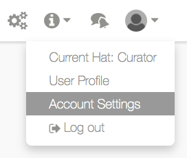
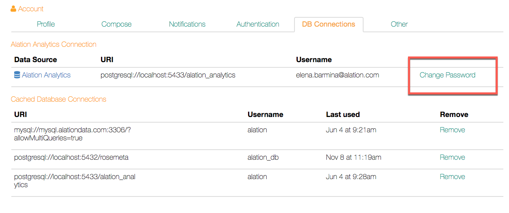

Restoring Alation Analytics V1¶
Customer Managed Applies to customer-managed instances of Alation
Applies to releases V R3 (5.6.x) to V R7 (5.10.x)
Use these steps to restore Alation Analytics after you have restored the data from a backup or after the failover to Secondary on an HA pair.
Note that this is only required for instances where Alation Analytics was enabled and you would like to continue using it after the restore or failover.
Note
This only applies to restore from a backup taken on releases V R3 to V R5.
To restore the Alation Analytics,
If during the restore you encounter errors related to the start of the alation-analytics-postgres service, first follow the steps in Setting Up the Postgres Service for Alation Analytics followed by Restoring User Accounts and Connections.
Example:
/var/lib/pgsql/alation_analytics/data is missing.
Use "service alation-analytics-postgres initdb" to initialize the cluster first
If you do not encounter such errors, skip to step Restoring User Accounts and Connections.
Setting Up the Postgres Service for Alation Analytics¶
Log in to Alation shell and run the command to set up the Alation Analytics database:
sudo /etc/init.d/alation shell sudo /opt/alation/bin/alation_action setup_alation_analytics_postgres
After the process is completed, start the service with the command:
sudo service alation-analytics-postgres start
You can confirm the status of the service using the following command:
service alation-analytics-postgres status
After the process has started, proceed to restore Alation Analytics user counts and whitelisted connections.
Restoring User Accounts and Connections¶
Important
All Alation Analytics users will have to change their password after this restore as their old password will not work.
To restore the accounts,
Copy the script
create_dbusers_whitelist_connections_alation_analytics.pyto the Alation server, for example, to/<your data mount>/tmpand change owner to alation:sudo chown alation:alation create_dbusers_whitelist_connections_alation_analytics.py
Enter the Alation shell and copy the file
create_dbusers_whitelist_connections_alation_analytics.pyto/opt/alation/django/alation_analytics/one_off_scripts/sudo /etc/init.d/alation shell sudo su alation cd /opt/alation/django/alation_analytics/one_off_scripts/ cp /data1/tmp/create_dbusers_whitelist_connections_alation_analytics.py .
Run the script to re-create Alation Analytics users and set temporary password:
sudo su alation #If not yet cd /opt/alation/django python alation_analytics/one_off_scripts/create_dbusers_whitelist_connections_alation_analytics.py
You can also run the Analytics ETL job manually as follows or allow it to run on schedule. If you prefer the latter, skip this step.
sudo su alation #If not yet cd /opt/alation/django ./alation_analytics/one_off_scripts/run_etl_jobs
Server clean-up: delete the
create_dbusers_whitelist_connections_alation_analytics.pyscript from your instance:sudo rm /opt/alation/django/alation_analytics/one_off_scripts/create_dbusers_whitelist_connections_alation_analytics.py
Notify the Alation Analytics users that they need to change their passwords for Alation Analytics accounts when they first use it after the restore.
Changing Alation Analytics Password¶
Alation Analytics password can be changed using Account Settings > DB Connections in Alation:
Account Settings:
{kind=link}
Account Settings > DB Connections:
{kind=link}
create_dbusers_whitelist_connections_alation_analytics.py¶
#!/opt/alation/env/bin/python
# coding=utf-8
"""Create user accounts on Alation Analytics Postgres after backup and restore.
This script assumes that the feature Alation Analytics is already turned on and this instance is
restored from a backup of a different Alation instance.
CAUTION: Once this script is executed all the database users on Alation Analytics will
have to reset their credentials.
Usage:
python create_aa_user_accounts_on_postgres
"""
# Special import required to add django apps to the path.
# coding=utf-8
import os
import sys
# Set up the environment.
# Special import required to add django models to the python path.
from rosemeta.one_off_scripts import bootstrap_rosemeta
from django.core.exceptions import MultipleObjectsReturned
from db_metadata.enums import BuiltinDataSource
from rosemeta.models import DataSource
path = os.path.dirname(os.path.abspath(__file__))
sys.path.append(os.path.join(path, '../../'))
import sys
import logging
import uuid
from db_management.tasks.database_external_connection_tasks import sync_all_db_connection_and_reload
from db_management.models import DBUser
from db_management.utils.db_utils import UserAccountAlreadyExistsOnDBException
logger = logging.getLogger(__name__)
def _create_db_users_on_alation_analytics_db():
number_of_accounts_created = 0
number_of_accounts_already_existing = 0
for db_user in DBUser.objects.all():
try:
temp_password = uuid.uuid4().hex
db_user.create_db_account(temp_password)
number_of_accounts_created += 1
except UserAccountAlreadyExistsOnDBException:
number_of_accounts_already_existing += 1
continue
except Exception as e:
logger.exception(
"Unexpected exception occurred. This script will abort now! Please contact "
"Alation support to resolve the following error: %s", e.message)
return -1
logger.info(
"Successfully finished the script execution. Number of user accounts created: %d, "
"user accounts already existing: %d", number_of_accounts_created,
number_of_accounts_already_existing)
def _get_alation_analytics_ds():
# Check if the DS is already in the catalog.
ds = None
try:
ds = DataSource.objects.get(
builtin_datasource=BuiltinDataSource.ALATION_ANALYTICS, deleted=False)
except MultipleObjectsReturned as e:
logger.exception(e)
ds = DataSource.objects.filter(
builtin_datasource=BuiltinDataSource.ALATION_ANALYTICS, deleted=False).last()
except DataSource.DoesNotExist:
pass
return ds
def main():
_create_db_users_on_alation_analytics_db()
print("Please note that ALL the users will have to reset their credentials from the UI.")
analytics_ds = _get_alation_analytics_ds()
if not analytics_ds:
print("Could not retrieve the Alation Analytics Datasource in the catalog. Please "
"contact support@alation.com for further assistance.")
return -1
sync_all_db_connection_and_reload.apply_async(kwargs={
'ds_id': analytics_ds.id,
'force_reload': True
})
print("Scheduled the celery task to whitelist external connections on the Alation Analytics "
"Database. ")
return 0
if __name__ == '__main__':
sys.exit(main())